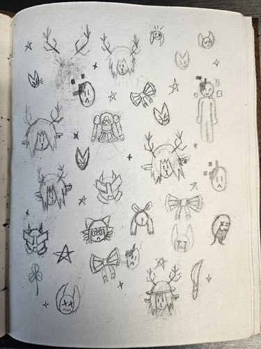
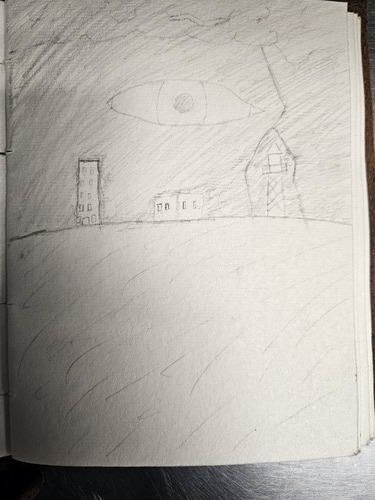

Theoretically any projects I make in the future will go here because I will keep updating this website even if I dont need to. because I like doing it.
In the meantime enjoy random art I drew!!!


I guess in a way these were projects. Not what this page was ment for but its a form of creation.
Art has always been something I enjoyed but was never particularly good at. I guess thats why programing and gamedev interest me they are slightly more logical forms of expression.